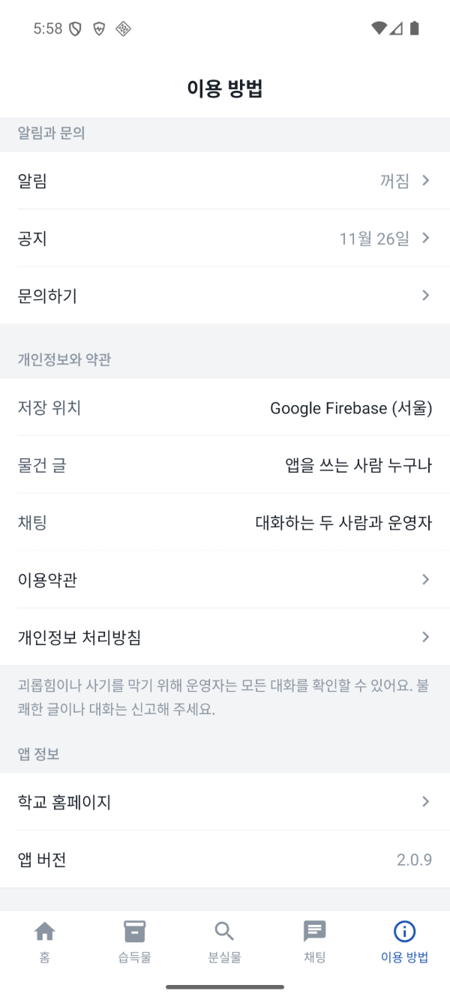
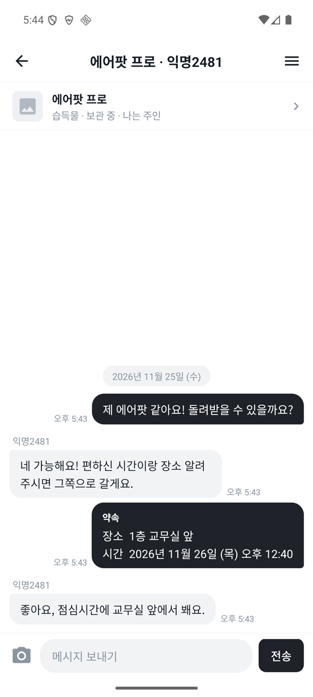

설치하기
쓰고 있는 기기를 고르세요. 처음에는 지금 기기에 맞는 방법이 열려 있어요.
- 아래 APK 받기를 눌러 설치 파일을 받아요.
- 다운로드가 끝나면 알림이나 '내 파일 › 다운로드'에서 파일을 눌러요.
- '출처를 알 수 없는 앱' 안내가 나오면 설정을 눌러 이번만 허용하고 설치를 눌러요.
- 설치가 끝나면 열기를 눌러요. 로그인 없이 바로 쓸 수 있어요.
| 버전 | 2.0.11 (2026년 11월 27일) |
|---|---|
| 파일 크기 | 약 3.1MB |
| 필요한 버전 | Android 6.0 이상 |
| 권한 | 인터넷, 알림 (알림은 켤 때만 물어봐요. 카메라와 사진은 고를 때만 해당 앱을 열어 써요) |
| 업데이트 | 새 버전이 나오면 앱을 열 때 알려 줘요. 새 APK를 그대로 설치하면 글과 대화는 남아요. |
| SHA-256 | - |
- Edge나 Chrome에서 이 페이지를 열어요.
- 아래 앱 설치를 누르고 설치 창에서 설치를 눌러요. 버튼이 안 되면 주소창 오른쪽의 설치 아이콘(모니터 모양)을 눌러도 돼요.
- 시작 메뉴와 바탕화면에 '분실물 센터'가 생기고, 따로 된 창으로 열려요.
| 필요한 브라우저 | Microsoft Edge 또는 Google Chrome (Windows 10 이상) |
|---|---|
| 지우는 방법 | 앱 창 오른쪽 위 ⋯ 메뉴 › '앱 제거' |
| 업데이트 | 새 버전이 나오면 앱을 열 때 자동으로 바뀌어요. |
- Chrome이나 Edge라면 아래 앱 설치를 누르거나, 주소창 오른쪽 설치 아이콘을 눌러요.
- Safari(macOS Sonoma 14 이상)라면 메뉴 막대의 파일 › Dock에 추가를 눌러요.
- Dock과 Launchpad에 '분실물 센터'가 생기고, 따로 된 창으로 열려요.
| 필요한 브라우저 | Chrome, Edge 또는 Safari 17 이상 |
|---|---|
| 지우는 방법 | Dock에서 앱을 휴지통으로 끌거나, 앱 메뉴 › '제거' |
| 업데이트 | 새 버전이 나오면 앱을 열 때 자동으로 바뀌어요. |
- iPhone · iPad: Safari에서 이 페이지를 열고 아래 웹에서 열기를 눌러요.
- 화면 아래 공유 버튼(네모에서 화살표가 나오는 모양)을 누르고 홈 화면에 추가를 눌러요.
- 홈 화면의 '분실물 센터' 아이콘으로 앱처럼 열 수 있어요. 학교 컴퓨터에서는 설치 없이 웹에서 바로 써도 돼요.
| 주소 | https://eunyool10.github.io/changui-lost-found/app/ |
|---|---|
| 필요한 브라우저 | 최신 Safari, Chrome, Edge, Samsung 인터넷 |
| 알림 | 웹은 페이지를 열어 둔 동안만 알려요. 알림을 놓치지 않으려면 Android 앱을 써 주세요. |
새로 바뀐 점 2.0.11
이미 설치했다면 앱을 열 때 나오는 안내에서 '받기'를 눌러 업데이트하세요.
| 알림 | 새 메시지, 내 글과 비슷한 물건, 문의 답변이 오면 알려 줘요. 켤 때만 받아요. |
|---|---|
| 공지 | 새 공지가 있으면 맨 위에 '새 공지가 있어요'가 보이고, 누르면 전체 내용을 볼 수 있어요. |
| 문의하기 | '이용 방법' 탭에서 운영자에게 묻고, 답변도 같은 곳에서 봐요. |
| 계정 삭제 | '이용 방법' 탭 맨 아래에서 바로 지울 수 있어요. 올린 글과 사진, 보낸 메시지, 문의가 함께 지워져요. |
| 오래된 글 정리 | 올린 지 30일이 지난 글은 찾았는지 한 번 물어봐요. |
| 공유 | 글을 공유하면 링크가 함께 가고, 메신저에서 미리보기 카드가 보여요. |
| 이용 방법 화면 | 알림은 스위치로 켜고 끄고, 이용약관·개인정보 처리방침·운영 정책은 한곳에 모아 따로 열어 봐요. |
| 약관과 정책 | 12월 4일부터 이용약관과 개인정보 처리방침이 더 자세해지고, 운영 정책이 새로 생겨요. 이용약관 · 개인정보 처리방침 · 운영 정책 |
| 외부 링크 | 약관 속 링크를 누르면 외부 사이트로 이동할지 먼저 물어봐요. |

이런 걸 할 수 있어요
옆으로 밀어서 더 볼 수 있어요.




이용 방법
물건을 잃어버렸다면
- '습득물' 탭에서 누가 이미 주워서 올려 두었는지 먼저 찾아봐요.
- 없으면 '분실물 신고'로 물건 이름, 종류, 잃어버린 장소와 날짜를 적어 올려요.
- 알림을 켜 두면 비슷한 습득물이 올라올 때 알려 줘요.
- 내 물건 같으면 '제 물건이에요 · 채팅'으로 주운 사람과 약속을 잡아요.
- 돌려받았으면 내 글에서 '찾았어요'를 눌러요.
물건을 주웠다면
- 귀중품은 먼저 담임 선생님이나 교무실에 맡겨요.
- '습득물 등록'에서 사진을 찍고, 주운 장소와 맡겨 둔 곳을 적어 올려요.
- 주인이 채팅을 보내면 알림이 오고 '채팅' 탭에 빨간 점이 생겨요.
- 돌려줬으면 '주인에게 돌려줬어요'를 눌러요.
| 개인정보 | 전화번호, 주소, 학번은 글이나 채팅에 쓰지 마세요. 사진에도 얼굴이나 이름표가 나오지 않게 찍어 주세요. |
|---|---|
| 만날 때 | 교무실 앞처럼 사람이 많은 학교 안 장소에서 만나요. |
| 불쾌할 때 | 채팅방 오른쪽 위 메뉴에서 신고하거나 차단할 수 있어요. 글은 상세 화면 맨 아래에서 신고해요. |
| 저장 | 올린 물건과 채팅은 Google Firebase 서버(서울)에 저장돼요. 물건 글은 앱을 쓰는 사람 누구나 볼 수 있어요. 채팅은 대화하는 두 사람이 보고, 괴롭힘이나 사기를 막기 위해 운영자도 모든 대화를 확인할 수 있어요. |
설치 도움말
'출처를 알 수 없는 앱' 설치가 막혀 있어요
휴대폰 설정 › 애플리케이션(앱) › 특별한 접근 › 출처를 알 수 없는 앱 설치에서 APK를 받은 브라우저(Chrome, 삼성 인터넷 등)를 허용해 주세요. 설치가 끝나면 다시 꺼도 돼요. 메뉴 이름은 휴대폰마다 조금 달라요.
'Play 프로텍트' 경고가 나와요
Play 스토어 밖에서 받은 앱이라 나오는 안내예요. 이 페이지에서 받은 파일이 맞다면 세부정보 › 무시하고 설치(또는 '그래도 설치')를 누르면 돼요. 파일이 맞는지는 위 표의 SHA-256 값으로 확인할 수 있어요.
업데이트하면 글과 대화가 사라지나요?
아니요. 지운 뒤 다시 설치하지 말고, 새 APK를 그대로 설치하면 지금 글과 대화가 그대로 남아요. 이메일·Google·카카오로 로그인해 두면 앱을 지우거나 휴대폰을 바꿔도 이어서 쓸 수 있어요.
'앱이 설치되지 않았습니다'가 나와요
저장 공간이 부족하거나 파일이 끝까지 받아지지 않았을 때 나와요. 공간을 비우고 APK를 다시 받아 주세요. 다른 곳에서 받은 같은 이름의 앱이 있다면 먼저 지워야 해요.
Play 스토어나 App Store에는 없나요?
학교 안에서만 쓰는 앱이라 스토어 대신 이 페이지에서 받아요. iPhone은 Safari에서 '홈 화면에 추가'로 앱처럼 쓸 수 있어요.
그래도 안 되면 어디에 물어보나요?
웹 버전의 '이용 방법 › 문의하기'에 남기거나 eunyool100208@gmail.com으로 보내 주세요.